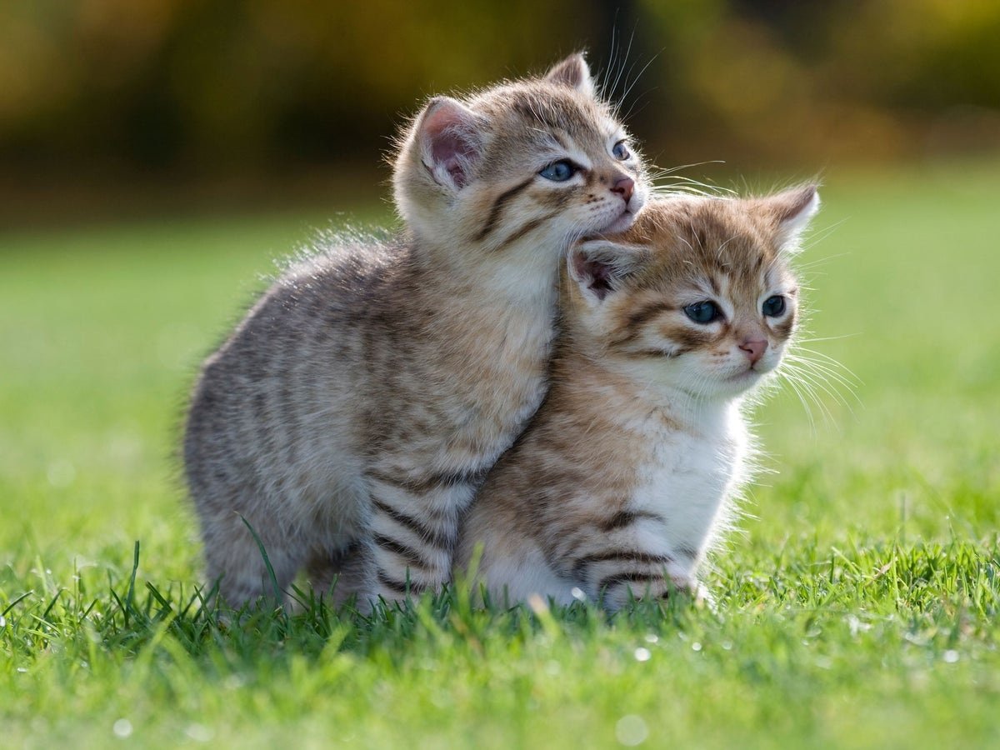
Two kittens
Source image
Stencil
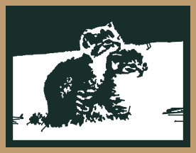
Multicolor

Depth · colored paper
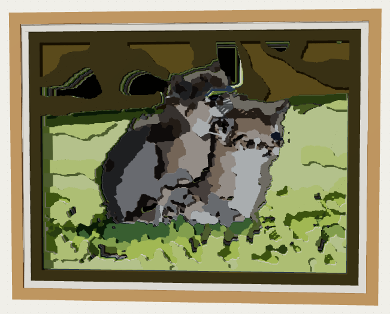
Depth · white paper + light
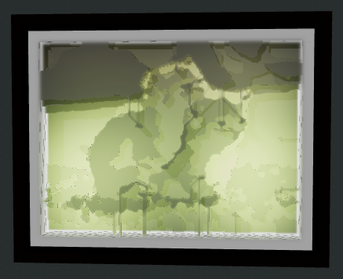
Three source images. Four production variants. Actual workflow results, with no original-photo insert in this comparison.




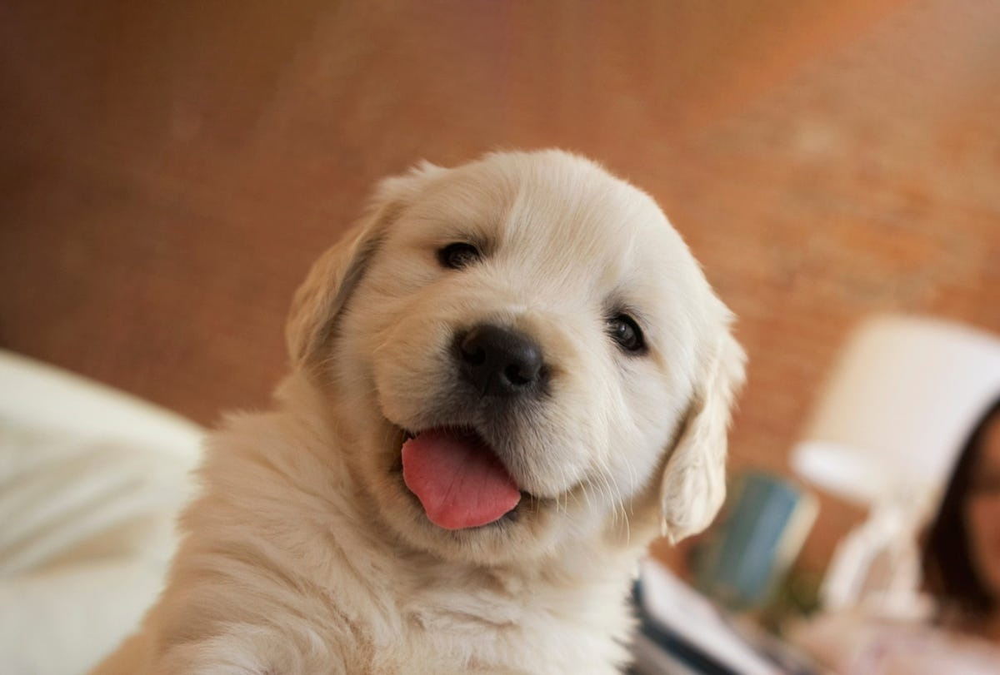
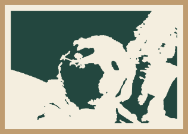

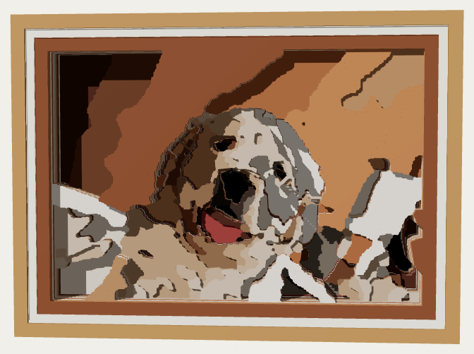
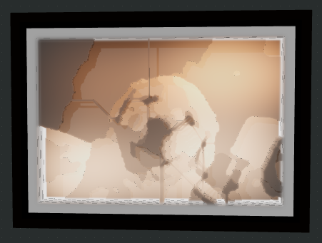
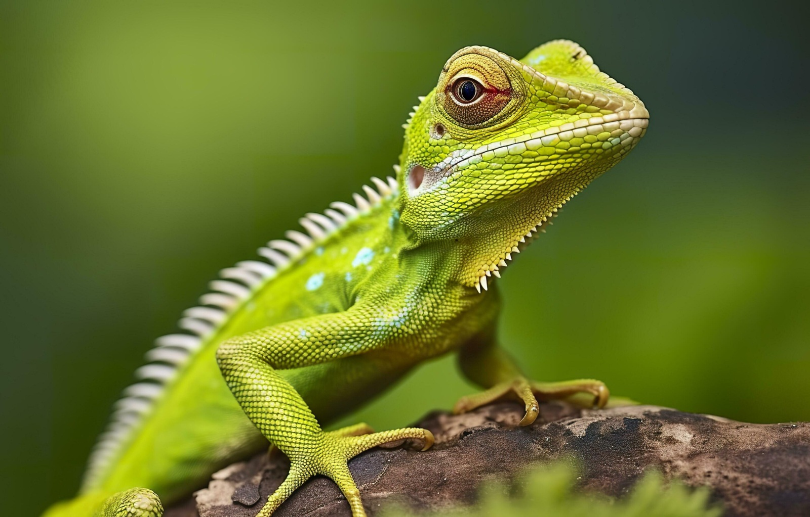
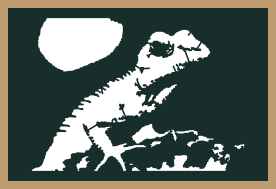

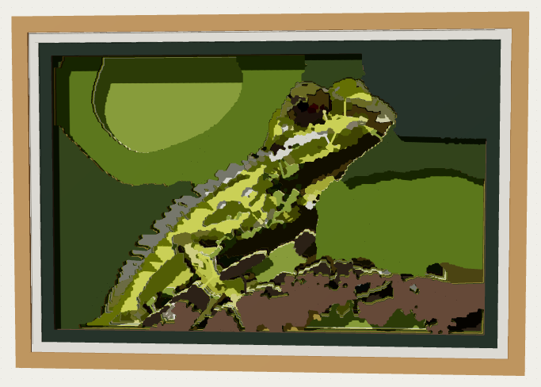
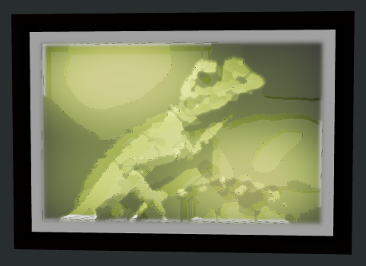